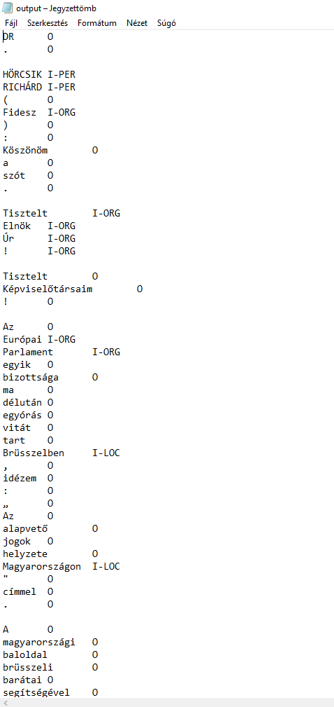

11 NLP és névelemfelismerés
A természetes-nyelv feldolgozása (Natural Language Processing – NLP) a nyelvészet és a mesterséges intelligencia közös területe, amely a számítógépes módszerek segítségével elemzi az emberek által használt (természetes) nyelveket. Azaz képes feldolgozni különböző szöveges dokumentumok tartalmát, kinyerni a bennük található információkat, kategorizálni és rendszerezni azokat.
Angol nyelvű szövegek NLP elemzésére több R csomag is rendelkezésünre áll, ezek közül kettőt mutatunk be röviden. Mivel magyar nyelvű szövegek NLP elemzésére ezek a csomagok jelenleg nem alkalmasak, azt mutatjuk be, hogyan végezhetjük el a magyar nyelvű szövegek mondatra és szavakra bontását, szófaji egyértelműsítését, morfológiai és szintaktikai elemzését az R program használata nélkül és azután a kapott fájlokkal hogyan végezhetünk az R program segítségével további elemzéseket.45
A fejezetben részletesen foglalkozunk a névelem-felismeréssel (Named Entity Recognition – NER). Névelemnek azokat a tokensorozatokat nevezzük, amelyek valamely entitást egyedi módon jelölnek. A névelem-felismerés az infomációkinyerés részterülete, melynek lényege, hogy automatikusan felismerjük a strukturálátlan szövegben szereplő tulajdonneveket, majd azokat kigyűjtsük, és típusonként (például személynév, földrajzi név, márkanév, stb.) csoportosítsuk. Bár a tulajdonnevek mellett névelemnek tekinthetők még például a telefonszámok vagy az e-mail címek is, a névelem-felismerés leginkább mégis a tulajdonnevek felismerésére irányul. A névelem-felismerés a számítógépes nyelvészetben a korai 1990-es évektől kezdve fontos feladatnak és megoldandó problémának számít.
A névelem-felismerés többféle módon is megoldható, így például felügyelt tanulással, szótár alapú módszerekkel vagy kollokációk elemzésével. A névelem-felismerés körében két alapvető módszer alkalmazására van lehetőség. A szabályalapú módszer alkalmazása során előre megadott adatok alapján kerül kinyerésre az információ (ilyen szabály például a mondatközi nagybetű mint a tulajdonnév kezdete). A másik módszer a statisztikai tanulás, amikor a gép alkot szabályokat a kutató előzetes mintakódolása alapján. A névelemfelismerés során nehézséget okozhat a különböző névelemosztályok közötti gyakori átfedés, így például ha egy adott szó településnév és vezetéknév is lehet.
A magyar nyelvű szövegekben a tulajdonnevek automatikus annotációjára jelenleg három módon van lehetőség: tulajdonnév-felismerő algoritmussal, szófaji címke szintjén történő megkülönböztetéssel, valamint szintaktikai szintű címkézéssel. Utóbbi kettőre példa a fejezetben is bemutatásra kerülő magyarlanc elemző, ami szófaji szinten megkülönbözteti a tulajdonneveket, a szintaxis szintjén pedig jelöli a többtagúakat.(Zsibrita, Vincze, and Farkas 2013)
A tulajdonnév-felismerő algoritmusok megkeresik az adott szövegben a tulajdonneveket, majd azokat valamilyen kategóriába sorolják, ilyen magyar nyelvű algoritmus a szeged ner, melynek alkalmazását szintén bemutatjuk.(Szarvas, Farkas, and Kocsor 2006) Fontos különbséget tenni a névelem-felismerés és a tulajdonnév-felismerés között. A névelem-felismerésbe beletartozik minden olyan kifejezés, amely a világ valamely entitására egyedi módon (unikálisan) referál. Ezzel szemben a tulajdonnév-felismerés, kizárólag a tulajdonnevekre koncentrál.(Üveges 2019; Vincze 2019)
A magyarlancnyelvi előfeldolgozó eszköz a Szegedi Tudományegyetem fejlesztése,(Zsibrita, Vincze, and Farkas 2013) ami magyar nyelvű txt formátumú fájlokat feldolgozva képes egy szöveg mondatokra és szavakra bontására, a szavak morfológiai elemzésére, szófaji egyértelműsítésére, emellett kétféle szintaktikai elemzést is képes hozzárendelni a mondatokhoz.46
A magyarlanchoz hasonlóan az UDPipe nevű elemző szintén képes magyar nyelvű nyers szövegek mondatra és szavakra bontására és szófaji elemzésére, azaz POS-taggelésére (Part of Speech-tagging) továbbá a mondatok függőségi elemzésére. Ez az elemző a nemzetközileg elismert Universal Dependencies annotációs sémán alapul. (Straka and Straková 2017) A két nyelvi elemző hasonló funkcionalitásokkal rendelkezik, ugyanakkor az UDPipe technikailag könnyebben kezelhető, azonban kevésbé pontos elemzési eredményt ad, mivel jóval kisebb tanító anyagon lett betanítva, mint a magyarlanc.47
Az alábbiakban a magyarlanc és a szeged ner működését és az általuk létrehozott fájlokkal R-ben végezhető elemzésekre mutatunk példákat.
11.1 A magyarlanc
Az elemző használatának részletes leírás megtalálható a már jelzett honlapon, itt most csak vázlatosan ismeretetjük. Fontos kiemelni, hogy a magyarlanc JAVA modulokból áll, így használatához szükséges, hogy a számítógépen megfelelő JAVA környezet legyen telepítve. Először fenti oldalról le kell töltenünk a magyarlanc-3.0.jar fájlt, majd bemásolni azt abba a mappába, ahol az elemezni kívánt txt található. A parancssort Windows operációs rendszer alatt a számítógép kereső mezőjébe a cmd parancs beírásával tudjuk megnyitni. Ezután a parancsorban belépve abba a könyvtárba, ahol az elemezni kíván txt és a magyarlanc-3.0.jar elemző van, az alábbi parancs segítségével végezhetjük el az elemzést: java -Xmx1G -jar magyarlanc-3.0.jar -mode morphparse -input in.txt -output out.txt, ahol az in.txt helyébe az elemezni kívánt txt nevét, az out.txt helyébe, pedig az elemzés eredményeként létrejövő fájl nevét kell megadni.
Példánkban az Országgyűlésben 2014 és 2018 között elhangzott véletlenszerűen kiválasztott 25 napirend előtti felszólalás korpuszán szemléltetjük az elemző működését.48 A 25 fájlt elemezhetjük egyesével, de ha ez a későbbi elemzéshez nem szükséges, a parancsorban a copy *.txt eredmeny.txt paranccsal egyesíthetjük azokat egy fájlba. Majd ezen az eredmeny.txt-n végezzük el az elemzést az alábbi paranccsal: java -Xmx1G -jar magyarlanc-3.0.jar -mode morphparse -input eredmeny.txt -output eredmeny_out.txt
Az elemzés eredményéül kapott txt fájlban láthatjuk, hogy az elemző elvégezte a szövegek mondatokra bontását, tokenizálását, szótári alakra hozását és POS-taggelését, azaz meghatározta a szavak szófaját.
Figure 11.1: A magyarlánc elemzo nyers eredménye

Ezt követően célszerű a txt fájlt excelbe beolvasva oszlopokra tagolni, az oszlopokat fejléccel ellátni, majd csv fájlként elmenteni.
Figure 11.2: Az Excelben megnyitott magyarlánc eredmény

Az így létrehozott .csv fájllal megyegyező adattáblát be tudjuk tölteni a HunMineR segítségével.
library(readr)
library (dplyr)
library(HunMineR)napirend_elotti <- read_delim("data/napirend_elotti_magyarlanc.csv", delim = ";")Az így létrehozott objektummal, mely esetünkben 17870 megfigyelést és 4 változót tartalmaz, ezután különböző műveleteket végezhetünk, a korábban már bemutatottak szerint, például dplyr csomag filter függvénye segítségével kiválogathatjuk az igéket, és elmenthetjük azokat egy újabb 1769 megfigyelést és 4 változót tartalmazó objektumba.
verb_napirend_elotti <- napirend_elotti %>%
filter(POS_tag == "VERB")11.2 A szeged ner
A magyarlanc nyelvi elemzőhöz hasonlóan használhatjuk a szeged ner elemzőt is, melynek részletes leírása és maga a ner.jar elemző is megtalálható az alábbi oldalon: https://rgai.inf.u-szeged.hu/node/109. Az elemző a fent bemutatott módon szintén parancssorból indítható az alábbi parancs használatával: java -Xmx3G -jar ner.jar -mode predicate -input input.txt -output output.txt. Az elemző PER (személynév), LOC (hely(szín)), ORG (szervezet) és MISC (vegyes) címkét ad az egyes névelemeknek.
Figure 11.3: A szeged ner elemzo eredménye
A fentiekhez hasonlóan ezt a txt-t is átalakíthatjuk táblázattá, majd ezt a csv fájlt beolvashatjuk (a HunMineR csomag szintén tartalmazza ezt a data frame-et).
napirend_elotti_ner <- read_delim("data/ner.csv", delim = ";")Ezután tetszőlegesen kiválogathatjuk például a helyek neveit. A filterezés eredményeként láthatjuk, hogy az elemző korpuszunkban 175 szót azonosított és címkézett fel helynévként.
loc_napirend_elotti <- napirend_elotti_ner %>%
filter(ner == "I-LOC")De ugyanígy kiváogathatjuk a személyneveket is, azonban itt figyelembe kell vennünk, hogy az elemző külön névelemként jelöli a vezeték és keresztneveket, a további elemzés szükségletei szerint ezeket utólag kell összevonnunk.
pers_napirend_elotti <- napirend_elotti_ner %>%
filter(ner == "I-PER")Az így kiválogatott különböző névelemekkel azután további elemzéseket végezhetünk.
11.3 Angol nyelvű szövegek névelemfelismerése
Amennyiben angol nyelvű korpusszal dolgozunk több lehetőség is a rendelkezésünkre áll a névelemfelismerés elvégzésére.49 Ezek közül most röviden a spacyr használatát mutatjuk be.50 A spaCy nem egy R, hanem egy Phyton csomag51, amely azonban az R reticulate csomag segítségével nagyon jól együttműködik a kötetben rendszeresen használt quanteda csomaggal. Használatához a már megszokott módon installálnunk kell a spacyr csomagot, majd beolvasnunk és telepítenünk az angol nyelvi modellt. A Pythonban készült spacy-t a spacyr::spacy_install() paranccsal kell telepíteni (ezt elég egyszer megtenni, amikor először használjuk a csomagot).
library(spacyr)
library(quanteda)
library(ggplot2)
spacy_initialize(model = "en_core_web_sm")A spacy_parse() függvény segítségével lehetőségünk van a szövegek tokenizálására, szótári alakra hozására és szófaji egyértelműsítésére.
txt <- c(d1 = "spaCy is great at fast natural language processing.",
d2 = "Mr. Smith spent two years in North Carolina.")
# process documents and obtain a data.table
parsedtxt <- spacy_parse(txt)
parsedtxt
#> doc_id sentence_id token_id token lemma pos
#> 1 d1 1 1 spaCy spacy NOUN
#> 2 d1 1 2 is be AUX
#> 3 d1 1 3 great great ADJ
#> 4 d1 1 4 at at ADP
#> 5 d1 1 5 fast fast ADJ
#> 6 d1 1 6 natural natural ADJ
#> 7 d1 1 7 language language NOUN
#> 8 d1 1 8 processing processing NOUN
#> 9 d1 1 9 . . PUNCT
#> 10 d2 1 1 Mr. Mr. PROPN
#> 11 d2 1 2 Smith Smith PROPN
#> 12 d2 1 3 spent spend VERB
#> 13 d2 1 4 two two NUM
#> 14 d2 1 5 years year NOUN
#> 15 d2 1 6 in in ADP
#> 16 d2 1 7 North North PROPN
#> 17 d2 1 8 Carolina Carolina PROPN
#> 18 d2 1 9 . . PUNCT
#> entity
#> 1
#> 2
#> 3
#> 4
#> 5
#> 6
#> 7
#> 8
#> 9
#> 10
#> 11 PERSON_B
#> 12
#> 13 DATE_B
#> 14 DATE_I
#> 15
#> 16 GPE_B
#> 17 GPE_I
#> 18Az elvégzett tokenizálás eredményéből adattáblát készíthetünk.
spacy_tokenize(txt, remove_punct = TRUE, output = "data.frame") %>%
tail()
#> doc_id token
#> 11 d2 spent
#> 12 d2 two
#> 13 d2 years
#> 14 d2 in
#> 15 d2 North
#> 16 d2 CarolinaUgyancsak lehetőségünk van a különböző entitások, így például a tulajdonnevek kinyerésére.
parsedtxt <- spacy_parse(txt, lemma = FALSE, entity = TRUE, nounphrase = TRUE)
entity_extract(parsedtxt)
#> doc_id sentence_id entity entity_type
#> 1 d2 1 Smith PERSON
#> 2 d2 1 North_Carolina GPEA tulajdonneveken túl felcímkézhetjük a dátumokat, eseményeket is.
entity_extract(parsedtxt, type = "all")
#> doc_id sentence_id entity entity_type
#> 1 d2 1 Smith PERSON
#> 2 d2 1 two_years DATE
#> 3 d2 1 North_Carolina GPEAz entity_consolidate() függvény segítségével arra is lehetőségünk van, hogy a több szóból álló entitásokat egy tokenként kezeljük.
entity_consolidate(parsedtxt) %>%
tail()
#> doc_id sentence_id token_id token pos
#> 11 d2 1 2 Smith ENTITY
#> 12 d2 1 3 spent VERB
#> 13 d2 1 4 two_years ENTITY
#> 14 d2 1 5 in ADP
#> 15 d2 1 6 North_Carolina ENTITY
#> 16 d2 1 7 . PUNCT
#> entity_type
#> 11 PERSON
#> 12
#> 13 DATE
#> 14
#> 15 GPE
#> 16A nounphrase_extract() függvény lehetőséget ad az összetartozó kifejezések összefűzésére.
nounphrase_extract(parsedtxt)
#> doc_id sentence_id nounphrase
#> 1 d1 1 spaCy
#> 2 d1 1 fast_natural_language_processing
#> 3 d2 1 Mr._Smith
#> 4 d2 1 two_years
#> 5 d2 1 North_CarolinaMajd képes arra, hogy ezeket az összetartozó kifejezéseket egyben kezelje.
nounphrase_consolidate(parsedtxt)
#> doc_id sentence_id token_id token
#> 1 d1 1 1 spaCy
#> 2 d1 1 2 is
#> 3 d1 1 3 great
#> 4 d1 1 4 at
#> 5 d1 1 5 fast_natural_language_processing
#> 6 d1 1 6 .
#> 7 d2 1 1 Mr._Smith
#> 8 d2 1 2 spent
#> 9 d2 1 3 two_years
#> 10 d2 1 4 in
#> 11 d2 1 5 North_Carolina
#> 12 d2 1 6 .
#> pos
#> 1 nounphrase
#> 2 AUX
#> 3 ADJ
#> 4 ADP
#> 5 nounphrase
#> 6 PUNCT
#> 7 nounphrase
#> 8 VERB
#> 9 nounphrase
#> 10 ADP
#> 11 nounphrase
#> 12 PUNCTArra is lehetőség van, hogy az egyes kifejezések közötti függőségeket vizsgáljuk.
spacy_parse(txt, dependency = TRUE, lemma = FALSE, pos = FALSE)
#> doc_id sentence_id token_id token head_token_id
#> 1 d1 1 1 spaCy 2
#> 2 d1 1 2 is 2
#> 3 d1 1 3 great 2
#> 4 d1 1 4 at 2
#> 5 d1 1 5 fast 8
#> 6 d1 1 6 natural 7
#> 7 d1 1 7 language 8
#> 8 d1 1 8 processing 4
#> 9 d1 1 9 . 2
#> 10 d2 1 1 Mr. 2
#> 11 d2 1 2 Smith 3
#> 12 d2 1 3 spent 3
#> 13 d2 1 4 two 5
#> 14 d2 1 5 years 3
#> 15 d2 1 6 in 3
#> 16 d2 1 7 North 8
#> 17 d2 1 8 Carolina 6
#> 18 d2 1 9 . 3
#> dep_rel entity
#> 1 nsubj
#> 2 ROOT
#> 3 acomp
#> 4 prep
#> 5 amod
#> 6 amod
#> 7 compound
#> 8 pobj
#> 9 punct
#> 10 compound
#> 11 nsubj PERSON_B
#> 12 ROOT
#> 13 nummod DATE_B
#> 14 dobj DATE_I
#> 15 prep
#> 16 compound GPE_B
#> 17 pobj GPE_I
#> 18 punctA következőkben a Szótáralapú elemzések, érzelem-elemzés fejezetben is használt Magyar Nemzeti Bank kamatdöntéseit kísérő nemzetközi sajtóközleményei korpuszán mutatunk be egy példát a névelemfelismerésre és az eredmények vizualizálására.
Első lépésként beolvassuk a szövegeket, majd a már megismert quanteda csomag segítségévek korpuszt készítünk belőlük.
mnb_df <- HunMineR::data_mnb_pr
corpus_mnb <-corpus(mnb_df)Ezután a spacy_extract_entity() függvénye segítségévek elvégezzük a névelemfelismerést, a függvény argumentumában megadva, hogy milyen tipusú névelemeket szeretnénk kigyűjteni a korpuszból. A lehetséges típusok a named, extended, vagy all.52 Az elemzés eredménye pedig készülhet listában, vagy készülhet belőle adattábla. Példánkban mi kimenetként listát állítottunk be.
A névelemek tokenjeit ezután megritkítottuk, és csak azokat hagytuk meg, amelyek legalább nyolc alkalommal szerepeltek a korpuszban.
mnb_ner <- spacy_extract_entity(
corpus_mnb,
output = c("list"),
type = ("named"),
multithread = TRUE)
mnb_tokens <- tokens(mnb_ner)
features <- dfm(mnb_tokens) %>%
dfm_trim(min_termfreq = 8) %>%
featnames()
mnb_tokens <- tokens_select(mnb_tokens, features, padding = TRUE)Ezután a különböző alakban előforduló, de ugyanarra az entitásra vonatkozó névelemeket összevontuk.
mnb <- c("Magyar Nemzeti Bank", "MAGYAR NEMZETI BANK", "The Magyar Nemzeti Bank ", "the Magyar Nemzeti Bank", "MNB", "the Magyar Nemzeti Banks", "Nemzeti Bank", "The Magyar Nemzeti Banks MNB" )
lemma <- rep("Magyar Nemzeti Bank", length(mnb))
mnb_tokens <- tokens_replace(mnb_tokens, mnb, lemma, valuetype = "fixed")
mc <- c("Monetary Council", "MONETARY COUNCIL", "Magyar Nemzeti Bank Monetary Council", "MAGYAR NEMZETI BANK Monetary Council", "NEMZETI BANK Monetary Council" ,"The Monetary Council", "Council", "The Council", "Councils", "the Monetary Council", "Monetary Councils", "the Monetary Councils", "The Monetary Councils", "Monetray Council", "May the Monetary Council")
lemma <- rep("Monetary Council", length(mc))
mnb_tokens <- tokens_replace(mnb_tokens, mc, lemma, valuetype = "fixed")Majd elkészítettük a szóbeágyazás fejezetben már megismert fcm-et, végezetül pedig egy együttes előfordulási mátrixot készítettünk a kinyert entitásokból és a ggplot segítségével ábrázoltuk.53
mnb_fcm <- fcm(mnb_tokens, context = "window", count = "weighted", weights = 1 / (1:5), tri = TRUE)
feat <- names(topfeatures(mnb_fcm, 80))
mnb_fcm_select <- fcm_select(mnb_fcm, pattern = feat, selection = "keep")
dim(mnb_fcm_select)
#> [1] 35 35
size <- log(colSums(dfm_select(mnb_fcm, feat, selection = "keep")))
set.seed(144)
textplot_network(mnb_fcm_select, min_freq = 0.7, vertex_size = size / max(size) * 3)Figure 11.4: A Magyar Nemzeti Bank korpusz névelemeinek együttelofordulási mátrixa

A spacyr alapvetően az angol nyelvi modellel működik, de arra is van lehetőség, hogy a spaCy egyéb beépített nyelvi modelljeit (német, spanyol, portugál) használjuk. Létezik magyar nyelvi modell is, ez azonban jelenleg még nincs integrálva a spaCy-be, hanem egy GitHub repozitoriumból tölthető le. Ennek R-ben történő megvalósításához azonban haladó R ismeretek szükségesek, azért ennek leírásától jelen kötetben eltekintünk. A magyar nyelvi modell és leírása elérhető az alábbi linken: https://github.com/oroszgy/spacy-hungarian-models
Magyar nyelvű szövegek NLP elemzésére használható eszközök részletes listája: https://github.com/oroszgy/awesome-hungarian-nlp↩︎
A magyarlanc elérhető a <https://rgai.inf.u-szeged.hu/magyarlanc> oldalon, az innen letölthető
jarfájl segítségével atxtformátumú szövegfájlok elemzése parancssorból lehetséges.↩︎Az UDPipe elérhetősége: http://lindat.mff.cuni.cz/services/udpipe↩︎
A napirend előtti felszólalásokat tartalmazó korpusz a Hungarian Comparative Agendas Project keretében készült: https://cap.tk.hu/hu↩︎
További lehetőségekhez lásd például: https://analyticsindiamag.com/top-10-r-packages-for-natural-language-processing-nlp/↩︎
Részletes leírása: https://spacyr.quanteda.io/articles/using_spacyr.html↩︎
Részletes leírása: https://spacy.io/usage/linguistic-features#named-entities↩︎
Részletes leírását lásd: https://towardsdatascience.com/extend-named-entity-recogniser-ner-to-label-new-entities-with-spacy-339ee5979044↩︎
Részletes leírását lásd: https://tutorials.quanteda.io/basic-operations/fcm/fcm/↩︎